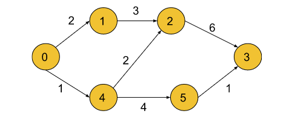
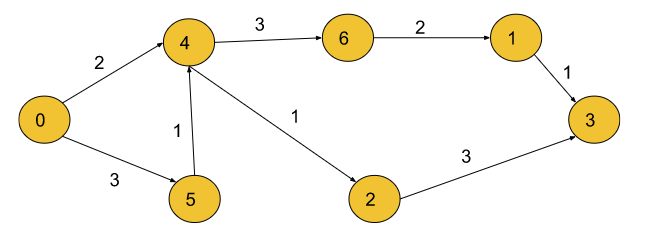

Shortest Path in Directed Acyclic Graph Topological Sort: G-27
Given a DAG, find the shortest path from the source to all other nodes in this DAG. In this problem statement, we have assumed the source vertex to be ‘0’. You will be given the weighted edges of the graph.
Note: What is a DAG ( Directed Acyclic Graph)?
A Directed Graph (containing one-sided edges) having no cycles is said to be a Directed Acyclic Graph.
Examples:
Example 1:

Input: n = 6, m= 7
edges =[[0,1,2],[0,4,1],[4,5,4],[4,2,2],[1,2,3],[2,3,6],[5,3,1]]
Output: 0 2 3 6 1 5
Explanation: The above output list shows the shortest path
to all the nodes from the source vertex (0),
Dist[0] = 0
Dist[1] = 2
Dist[2] = 3
Dist[3] = 6
Dist[4] = 1
Dist[5] = 5
Example 2:

Input: n = 7, m= 8
Edges =[[0,4,2],[0,5,3],[5,4,1],[4,6,3],[4,2,1],[6,1,2],[2,3,3],[1,3,1]]
Output: 0 7 3 6 2 3 5
Explanation:
The above output list shows the shortest path to all the nodes
from the source vertex (0),
Dist[0] = 0
Dist[1] = 7
Dist[2] = 3
Dist[3] = 6
Dist[4] = 2
Dist[5] = 3
Dist[6] = 5
Solution
Disclaimer: Don’t jump directly to the solution, try it out yourself first.
Intuition:
Finding the shortest path to a vertex is easy if you already know the shortest paths to all the vertices that can precede it. Processing the vertices in topological order ensures that by the time you get to a vertex, you've already processed all the vertices that can precede it which reduces the computation time significantly. In this approach, we traverse the nodes sequentially according to their reachability from the source.
Dijkstra's algorithm is necessary for graphs that can contain cycles because they can't be topologically sorted. In other cases, the topological sort would work fine as we start from the first node, and then move on to the others in a directed manner.
Approach:
We will calculate the shortest path in a directed acyclic graph by using topological sort. Topological sort can be implemented in two ways- BFS and DFS. Here, we will be implementing using the DFS technique. Depth First Search, DFS is a traversal technique where we visit a node and then continue visiting its adjacent nodes until we reach the end point, i.e., it keeps on moving in the depth of a particular node and then backtracks when no further adjacent nodes are available.
Initial configuration:
Adjacency List: Create an adjacency list of the formed vector of pairs of size ‘N’, where each index denotes a node ‘u’ and contains a vector that consists of pairs denoting the adjacent nodes ‘v’ and the distance to that adjacent node from initial node ‘u’.
Visited Array: Create a visited array and mark all the indices as unvisited (0) initially.
Stack: Define a stack data structure to store the topological sort.
Distance Array: Initialise this array by Max integer value and then update the value for each node successively while calculating the shortest distance between the source and the current node.
The shortest path in a directed acyclic graph can be calculated by the following steps:
Perform topological sort on the graph using BFS/DFS and store it in a stack. In order to get a hang of how the Topological Sort works, you can refer to this article for the same.
Now, iterate on the topo sort. We can keep the generated topo sort in the stack only, and do an iteration on it, it reduces the extra space which would have been required to store it. Make sure for the source node, we will assign dist[src] = 0.
For every node that comes out of the stack which contains our topo sort, we can traverse for all its adjacent nodes, and relax them.
In order to relax them, we simply do a simple comparison of dist[node] + wt and dist[adjNode]. Here dist[node] means the distance taken to reach the current node, and it is the edge weight between the node and the adjNode.
If (dist[node] + wt < dist[adjNode]), then we will go ahead and update the distance of the dist[adjNode] to the new found better path.
Once all the nodes have been iterated, the dist[] array will store the shortest paths and we can then return it.
Note: If you wish to see the dry run of the above approach, you can watch the video attached to this article.
Code:
#include<bits/stdc++.h>
using namespace std;
class Solution {
private:
void topoSort(int node, vector < pair < int, int >> adj[],
int vis[], stack < int > & st) {
//This is the function to implement Topological sort.
vis[node] = 1;
for (auto it: adj[node]) {
int v = it.first;
if (!vis[v]) {
topoSort(v, adj, vis, st);
}
}
st.push(node);
}
public:
vector < int > shortestPath(int N, int M, vector < vector < int >> & edges) {
//We create a graph first in the form of an adjacency list.
vector < pair < int, int >> adj[N];
for (int i = 0; i < M; i++) {
int u = edges[i][0];
int v = edges[i][1];
int wt = edges[i][2];
adj[u].push_back({v, wt});
}
// A visited array is created with initially
// all the nodes marked as unvisited (0).
int vis[N] = {
0
};
//Now, we perform topo sort using DFS technique
//and store the result in the stack st.
stack < int > st;
for (int i = 0; i < N; i++) {
if (!vis[i]) {
topoSort(i, adj, vis, st);
}
}
//Further, we declare a vector ‘dist’ in which we update the value of the nodes’
//distance from the source vertex after relaxation of a particular node.
vector < int > dist(N);
for (int i = 0; i < N; i++) {
dist[i] = 1e9;
}
dist[0] = 0;
while (!st.empty()) {
int node = st.top();
st.pop();
for (auto it: adj[node]) {
int v = it.first;
int wt = it.second;
if (dist[node] + wt < dist[v]) {
dist[v] = wt + dist[node];
}
}
}
for (int i = 0; i < N; i++) {
if (dist[i] == 1e9) dist[i] = -1;
}
return dist;
}
};
int main() {
int N = 6, M = 7;
vector<vector<int>> edges= {{0,1,2},{0,4,1},{4,5,4},{4,2,2},{1,2,3},{2,3,6},{5,3,1}};
Solution obj;
vector < int > ans = obj.shortestPath(N, M, edges);
for (int i = 0; i < ans.size(); i++) {
cout << ans[i] << " ";
}
return 0;
}
Output:
0 2 3 6 1 5
Time Complexity: O(N+M) {for the topological sort} + O(N+M) {for relaxation of vertices, each node and its adjacent nodes get traversed} ~ O(N+M).
Where N= number of vertices and M= number of edges.
Space Complexity: O( N) {for the stack storing the topological sort} + O(N) {for storing the shortest distance for each node} + O(N) {for the visited array} + O( N+2M) {for the adjacency list} ~ O(N+M) .
Where N= number of vertices and M= number of edges.
import java.util.*;
import java.lang.*;
import java.io.*;
class Main {
public static void main(String[] args) throws IOException {
int n = 6, m = 7;
int[][] edge = {{0,1,2},{0,4,1},{4,5,4},{4,2,2},{1,2,3},{2,3,6},{5,3,1}};
Solution obj = new Solution();
int res[] = obj.shortestPath(n, m, edge);
for (int i = 0; i < n; i++) {
System.out.print(res[i] + " ");
}
System.out.println();
}
}
class Pair {
int first, second;
Pair(int _first, int _second) {
this.first = _first;
this.second = _second;
}
}
//User function Template for Java
class Solution {
private void topoSort(int node, ArrayList < ArrayList < Pair >> adj,
int vis[], Stack < Integer > st) {
//This is the function to implement Topological sort.
vis[node] = 1;
for (int i = 0; i < adj.get(node).size(); i++) {
int v = adj.get(node).get(i).first;
if (vis[v] == 0) {
topoSort(v, adj, vis, st);
}
}
st.add(node);
}
public int[] shortestPath(int N, int M, int[][] edges) {
ArrayList < ArrayList < Pair >> adj = new ArrayList < > ();
for (int i = 0; i < N; i++) {
ArrayList < Pair > temp = new ArrayList < Pair > ();
adj.add(temp);
}
//We create a graph first in the form of an adjacency list.
for (int i = 0; i < M; i++) {
int u = edges[i][0];
int v = edges[i][1];
int wt = edges[i][2];
adj.get(u).add(new Pair(v, wt));
}
int vis[] = new int[N];
//Now, we perform topo sort using DFS technique
//and store the result in the stack st.
Stack < Integer > st = new Stack < > ();
for (int i = 0; i < N; i++) {
if (vis[i] == 0) {
topoSort(i, adj, vis, st);
}
}
//Further, we declare a vector ‘dist’ in which we update the value of the nodes’
//distance from the source vertex after relaxation of a particular node.
int dist[] = new int[N];
for (int i = 0; i < N; i++) {
dist[i] = (int)(1e9);
}
dist[0] = 0;
while (!st.isEmpty()) {
int node = st.peek();
st.pop();
for (int i = 0; i < adj.get(node).size(); i++) {
int v = adj.get(node).get(i).first;
int wt = adj.get(node).get(i).second;
if (dist[node] + wt < dist[v]) {
dist[v] = wt + dist[node];
}
}
}
for (int i = 0; i < N; i++) {
if (dist[i] == 1e9) dist[i] = -1;
}
return dist;
}
}
Output:
0 2 3 6 1 5
Time Complexity: O(N+M) {for the topological sort} + O(N+M) {for relaxation of vertices, each node and its adjacent nodes get traversed} ~ O(N+M).
Where N= number of vertices and M= number of edges.
Space Complexity: O( N) {for the stack storing the topological sort} + O(N) {for storing the shortest distance for each node} + O(N) {for the visited array} + O( N+2M) {for the adjacency list} ~ O(N+M) .
Where N= number of vertices and M= number of edges.
Special thanks to Priyanshi Goel for contributing to this article on takeUforward. If you also wish to share your knowledge with the takeUforward fam, please check out this article. If you want to suggest any improvement/correction in this article please mail us at write4tuf@gmail.com